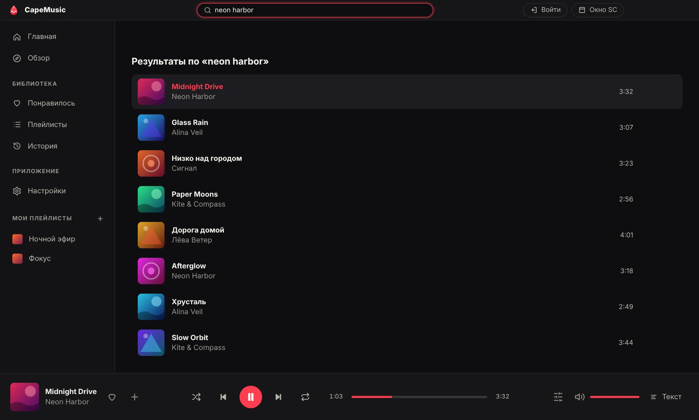
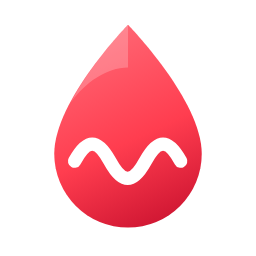

CapeMusic
Плеер для SoundCloud, в котором слова идут вместе с музыкой.
Как это выглядит

Что внутри
Живой текст
Строки идут по таймингу, как в Яндекс Музыке. Тексты берутся из LRCLIB, если автоподбор ошибся, можно найти вручную и сдвинуть время.
Эквалайзер и громкость
10 полос, пресеты, нормализация громкости. Ползунок громкости и кнопка эквалайзера всегда под рукой.
Своя библиотека
Лайки, плейлисты с обложкой, плейлисты из плейлистов и история по дням: сегодня, вчера, позавчера.
Повтор и перемешивание
Повтор трека или плейлиста. Один и тот же трек на повторе не засоряет историю.
Discord-статус
Друзья видят, что ты слушаешь, с обложкой и временем.
Темы и горячие клавиши
Тёмная и светлая тема, прозрачность окна, свои сочетания клавиш и медиаклавиши.
Changelog
Загружаю список версий…

Скачать CapeMusic
Для Windows 10 и новее. Дальше приложение обновляется само.
Скачать установщикWindows может показать предупреждение «Неизвестный издатель»: у приложения пока нет платной подписи разработчика. Нажми «Подробнее» и «Выполнить в любом случае».